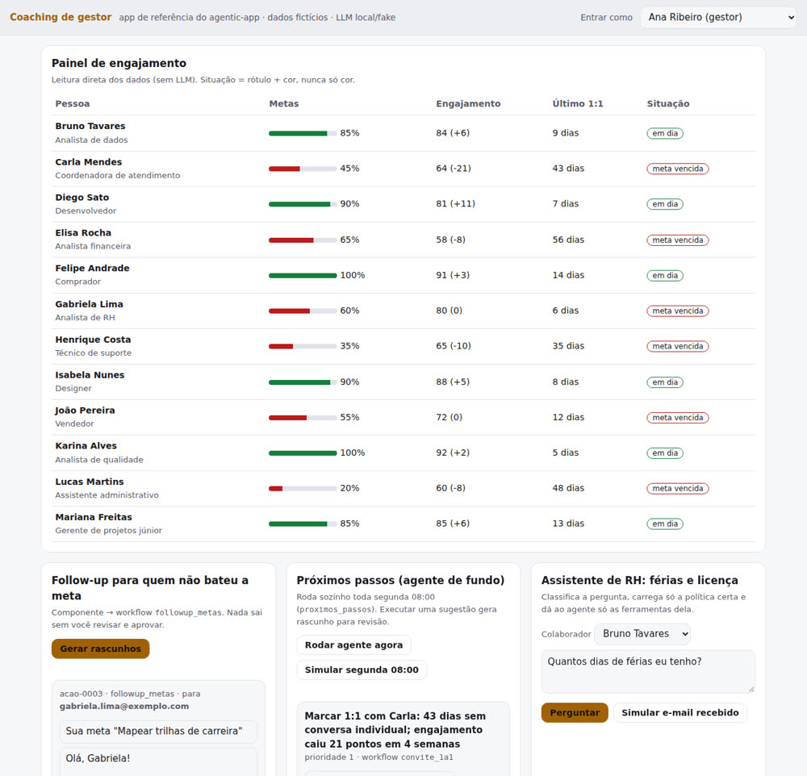
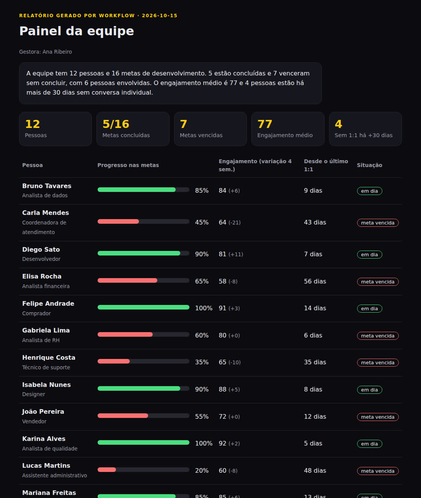

Monte apps de IA em que o LLM roda dentro de um workflow fixo, a pessoa aprova toda ação e a política da empresa vira código testado.
O agentic-app é um framework em Python para empresas construírem apps de IA a partir de um resultado de negócio, e não a partir do agente. Ele serve para quem precisa colocar IA dentro de um processo real (RH, gestão de pessoas, atendimento) com controle: o LLM roda dentro de um workflow fixo, toda ação externa espera aprovação humana, regras com número viram código testado e cada execução fica registrada. Vem com um app completo de exemplo (coaching de gestor) e roda só com o Python 3 instalado, sem chave e sem internet.
A pergunta de partida não é "que agente vamos criar?". É "quem decide o quê, e como medimos se ficou melhor?". O agente entra depois, como uma peça do processo.
Cada uso de LLM é um nó entre outros quatro: contexto, código, condição e formatação. Mesma entrada, mesma saída.
O workflow só propõe. O e-mail fica na fila até a pessoa ler, editar e aprovar. Tudo vai para o audit log.
O manual de férias vira funções com entrada estrita e 13 testes de política. Mudou um número, um teste quebra.
Cada pilar tem um arquivo e pelo menos um teste. Use a lista para revisar qualquer app de IA da sua empresa, mesmo que não use este código.
Canvas com pessoa usuária, decisão e métrica de sucesso antes de pensar em agente.
templates/canvas-resultado.md
Nós contexto → código → condição → LLM → formatação. O modelo é escolhido pela tarefa, não por gosto.
workflow.py · config.py
O botão do painel envia o input para o workflow e o resultado volta na própria tela, como rascunho editável.
painel.html · serve.py
Toda ação externa passa por revisão, edição e aprovação. Campos sensíveis, como o destinatário, ficam travados.
acoes.py
Observam os dados (meta vencida, 1:1 atrasado, engajamento caindo) e sugerem próximos passos com botão de executar.
workflow proximos_passos
Classifica a pergunta, carrega só a política certa e dá ao agente só as ferramentas dela. Busca fica para pergunta aberta.
policies/ferias.py
Papéis que podem executar, identidade de serviço com escopo mínimo e audit log com hash encadeado.
seguranca.py
Manual, agendado (segunda 08:00) e por evento (e-mail recebido), declarados no próprio JSON do workflow.
gatilhos.py
Relatório em HTML e PDF, gerado por workflow, no lugar de uma parede de texto.
relatorio.py
O motor confere quem pediu, assume a identidade do workflow, valida a entrada e roda os nós em ordem. A saída é JSON validado. Ações viram propostas. Uma linha de auditoria por execução.
perfil (contexto, identidade svc-rh) → categoria (LLM classifica: férias, licença parental ou outro) → condição → dados (código tira da pergunta os números) → agente (LLM escolhe entre as ferramentas SÓ daquela política) → explicação (código) → formatação.
equipe (contexto) → metas vencidas (código) → tem pendência? (condição) → rascunhos (LLM redige um por pessoa) → formatação valida e propõe 6 e-mails. Nenhum sai antes da aprovação.
Nada para instalar com pip. Nenhuma chave de API. Os testes bloqueiam a rede de propósito.
Linux, Mac ou Windows.
# conferir python3 --version
Para baixar o repositório.
git --versionSó se quiser trocar o LLM fake por um modelo local.
# opcional ollama list
Os quatro primeiros passos rodam o exemplo. Os outros mostram o que você troca para a sua empresa. O roteiro completo, com checklist de implantação, está em docs/PASSO-A-PASSO.md.
48 checks, sem rede. A última linha tem que ser OK.
git clone https://github.com/inematds/agentic-app cd agentic-app bash tests/run.sh # 48 checks, 0 falhas → OK
Executa os 5 workflows: RBAC negando, rascunhos, aprovação com edição, assistente de RH, agendado de segunda 08:00, evento de e-mail recebido e relatório.
python3 -m agentic_app.demo # gera saida/relatorio.html, saida/relatorio.pdf, saida/audit.jsonl
Troque de pessoa no topo (gestora, RH, colaborador) e veja o que cada papel pode fazer.
python3 -m agentic_app.serve --porta 8765 # http://127.0.0.1:8765 (só na sua máquina)
O script muda nove números do manual, um de cada vez, e confere que algum teste quebra.
bash tests/prova_mutacao.sh # 9× "quebrou (bom)" → OK
Pessoa usuária, decisão, custo de hoje e um número de sucesso com prazo. Sem métrica, não comece.
cp templates/canvas-resultado.md docs/meu-canvas.md
Uma constante por número do documento, um teste por limite (o valor exato e o vizinho).
cp templates/politica_modelo.py agentic_app/policies/reembolso.py cp templates/test_politica_modelo.py tests/test_reembolso.py
Contexto → código → condição → LLM → formatação. A ação externa vai em propor_acao, com os campos editáveis.
cp templates/workflow-modelo.json agentic_app/apps/coaching/workflows/meu_workflow.json python3 -c "from agentic_app.workflow import carregar_spec as c; c('agentic_app/apps/coaching/workflows/meu_workflow.json')"
Quem executa cada workflow, com qual conta de serviço ele age e quem aprova o que ele propõe.
cat templates/permissoes.json
O fake fica nos testes. Para um modelo local, uma variável. Para outro provedor, uma subclasse de LLM.
AGENTIC_LLM=ollama python3 -m agentic_app.demo
Dados fictícios. A gestora vê a equipe, gera follow-ups para quem não bateu a meta, recebe sugestões do agente de fundo e responde dúvidas de férias com a política codificada.


relatorio_equipe: 12 pessoas, 16 metas, 7 vencidas. Também sai em PDF.| Componente | Workflow | Nós | Quem executa | Age como |
|---|---|---|---|---|
| Follow-up de metas | followup_metas | 6 | gestor, sistema | svc-coaching |
| Próximos passos | proximos_passos | 6 | sistema, gestor | svc-coaching |
| Convite para 1:1 | convite_1a1 | 4 | gestor | svc-coaching |
| Assistente de RH | assistente_rh | 10 | colaborador, gestor, rh, sistema | svc-rh |
| Relatório | relatorio_equipe | 4 | gestor, rh, sistema | svc-coaching |
Os vídeos de explicação vão aparecer aqui.
O agentic-app não substitui os outros kits INEMA. Ele fica em cima deles.
O agente da empresa em arquivos: identidade, skills, regras e medição. Responde quem é o agente e como ele trabalha aqui.
Como os agentes descobrem, conectam e usam as ferramentas que você já tem. Responde por onde o agente chega nas ferramentas.
A aplicação que a pessoa de negócio usa: tela, workflow fixo, política em código, aprovação e auditoria. Responde que resultado a empresa ganha.
A versão 1.0.0 é o núcleo completo com um app de referência.